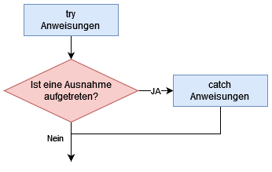
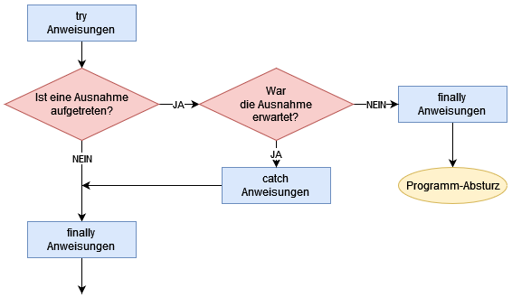

Die Try-Catch-Anweisung ist dafür da Ausnahmen im Code zu behandeln, die dazu führen würden, dass das Programm abstürzt. Dies wird auch als Exception Handling bezeichnet.
Exception Handling
Exception Handling wird ins Deutsche als Behandlung von Ausnahmen übersetzt. Mit Ausnahmen sind Fehlersituationen gemeint, die in einem Programm während der Ausführung entstehen können und auf die geeignet reagiert werden muss.
Es gibt tatsächlich Funktionen in Java (und Processing), die fehlschlagen können. Es kann zu Fehlersituationen kommen, die nicht vermeidbar sind. Normalerweise würde das Programm auf diese Ausnahmen reagieren, indem es abstürzt. Mit Try-Catch-Anweisungen sind wir in der Lage zu bestimmen, wie das Programm reagieren soll, wenn es zu einer Ausnahme kommt.
Aufbau
Der Aufbau einer Try-Catch-Anweisung sieht wie folgt aus.
try {
ANWEISUNGSBLOCK
} catch (AUSNAHME) {
ANWEISUNGSBLOCK
}Die Try-Catch-Anweisung besteht aus zwei Anweisungsblöcken.
- Der erste Anweisungsblock folgt dem Schlüsselwort
try:- In diesem Block steht der Code, den das Programm in jeden Fall ausführen soll und bei dem eine Ausnahme auftreten kann.
- Der zweite Anweisungsblock folgt dem Schlüsselwort
catch:- Dieser Block wird ausgeführt, wenn im ersten Block eine Ausnahme aufgetreten ist.
- In den runden Klammern wird angegeben für welche Art von Exception dieser Block gilt. Entweder kann man hier einfach alle Arten von Exceptions abfangen oder man kann mehrere unterschiedliche
catch-Blöcke haben für unterschiedliche Arten von Exceptions.
Im PAP lässt sich ein try-catch einfach mit einer logischen Verzweigung darstellen:

So sieht eine Try-Catch-Anweisung in einem konkreten Beispiel aus:
try {
// Dieser Code wirft eine Exception, wenn die Datei nicht vorhanden ist.
String[] text = loadStrings("textFile.txt");
} catch (Exception e) { // fängt alle Arten von Exceptions ab
println("Datei nicht gefunden");
}Was passiert hier genau in den runden Klammern?
Es wird eine Variable definiert, so wie wir das bereits kennen aus den Funktionen und den Parametern. Hier müssen wir festlegen, welchen Datentyp die Variable hat - in diesem Fall Exception - und e ist der Name der Variable. Somit kann ich innerhalb des catch-Blocks auf die Exception e zugreifen und mir z.B. die Fehlermeldung mit println(e.getMessage); Außerdem lege ich mit dem Datentyp fest für welche Art von Exception dieser catch-Block gilt. In diesem Fall gilt er für alle Arten von Exceptions.
Funktion
Welchen Sinn hat die Try-Catch-Anweisung und wie funktioniert sie? Salopp formuliert passiert folgendes: Wir sagen dem Programm:
"Versuch bitte mal Folgendes [...] und fange dabei folgenden Fehler-Typ ab (...) und mach dann Folgendes: [...]".
In den ersten Anweisungsblock hinter try fügen wir die eigentlichen Anweisungen ein, die ausgeführt (und überprüft) werden sollen. Dabei besteht natürlich immer die Gefahr, dass diese Anweisungen fehlschlagen. Daraufhin treten Ausnahmesituationen ein.
Die Standardreaktion, wenn Ausnahmesituationen eintreten, sieht so aus, dass die Anwendung gewaltsam beendet wird. Man könnte auch sagen sie stürzt ab. Dies ist selbstverständlich ein Verhalten, das für professionelle Anwendungen nicht in Frage kommt. Es darf nicht sein, dass irgendwo im Code eine Anweisung fehlschlägt und das Programm vor den Augen des Anwenders crasht.
Sollten wir also Funmtionen verwenden, die möglicherweise fehlschlagen und Ausnahmesituationen auslösen können, dann können wir hinter dem try-Anweisungsblock entsprechende Ausnahmen mit catch abfangen. Hierzu geben wir in die runden Klammern hinter dem Schlüsselwort catch an, auf welche Ausnahmesituation wir genau reagieren möchten.
Tritt genau die Ausnahmesituation ein, auf die das catch lauert, wird der Anweisungsblock hinter dem catch ausgeführt. Diesen könnten wir zum Beispiel nutzen, um dem Anwender eine entsprechende Fehlermeldung zu präsentieren. Wir könnten auch im catch-Anweisungsblock momentan vom Anwender im Programm verwendete Daten speichern und dann das Programm beenden. Dies ist alles besser als die Anwendung einfach abstürzen zu lassen.
Woher kannst du wissen, welche Funktionen möglicherweise fehlschlagen und zu Ausnahmesituationen führen?
→ Hier hilft nur der Blick in die Dokumentation. Dort ist zu jeder Funktion angegeben, ob sie und wenn ja zu welchen Ausnahmesituationen sie führen kann. Die wichtigsten Exceptions habe ich hier zusammengefasst:
| Exception | Beschreibung |
|---|---|
ArithmeticException |
Wenn eine arithmetische Ausnahme eintritt, wie z.B. die Division durch 0. |
ArrayIndexOutOfBoundsException |
Wenn bei einem Array auf Felder zugegriffen wird, die nicht existieren |
ClassNotFoundException |
Klasse konnte nicht gefunden werden (z.B. falscher Klassenname oder Verzeichnis angegeben) |
Exception |
Basisklasse aller Exceptions (kann alle Arten von Fehlern auffangen) |
NullPointerException |
Ein Objekt hatte den Wert null, obwohl ein anderer Wert gefordert war. |
NumberFormatException |
Es wurde versucht, einen Datentyp in einen anderen Datentyp zu konvertieren, der aber einen Wert hatte, der nicht konvertiert werden konnte (z.B. der String "A4" soll in einen int umgewandelt werden) |
MalformedURLException |
URL stimmt nicht (entweder besteht keine Verbindung zum Internet oder Adresse ist falsch geschrieben) |
Beispiel
Stell dir vor wir schreiben ein Programm, in dem der Nutzer sein Alter angeben muss. Bei Processing ist das leider gar nicht so leicht möglich, also eine einfache Nutzereingabe über ein Textfeld zum Beispiel, aber bei anderen Programmen - und auch bei einfachen Java-Anwendungen ist das sehr leicht möglich.
Da das bei Processing nicht so leicht funktioniert, schreiben wir einfach einen Wert in eine Variable und tun so, also käme dieser vom Nutzer.
Input vom Nutzer ist in der Regel immer im Format String und muss erst verarbeitet werden. Genau das tun wir jetzt auch. Das können wir mit der Java-Methode Integer.parseInt(). Diese Methode wandelt einen String in einen Integer um und wirft eine Exception, wenn dies nich möglich ist (weil der String zum Beispiel keine Zahl ist).
String userInput = "22";
int age = Integer.parseInt(userInput);Solange oben bei userInput eine 22 steht, macht dieser Code keine Probleme. Sobald dort aber keine Zahl steht (weil der Nutzer sich ggf. vertippt hat), haben wir ein Problem:
String userInput = "2a";
int age = Integer.parseInt(userInput);Dieser Code zeigt dir im Editor keinen Fehler an, sondern wirft erst bei der Ausführung einen Fehler. Damit unser Programm nicht abstürzt, wenn der User aus Versehen - oder mit voller Absicht - eine falsche Eingabe tätigt, sollten wir eine Try-Catch-Anweisung verwenden:
String userInput = "22";
int age;
try {
age = Integer.parseInt(userInput );
println("Dein Alter ist " + age + " Jahre.");
} catch (Exception e) {
println("Du Schlingel hast keine Zahl eingegeben.");
}Wenn du diesen Code in Processing kopierst und oben bei userInput etwas anderes als eine Zahl eingibst, wird dir folgendes auffallen: Die println-Anweisung im try-Block wird nicht ausgeführt. Das bedeutet, es wird - im Falle einer Ausnahme - nicht der komplette try-Block ausgeführt, sondern er wird da abgebrochen, wo die Ausnahme auftritt.
In den runden Klammern des catch-Blocks haben wir jetzt nur Exception angeben, also eine allgemeine Ausnahme. Wir hätten aber auch den genauen Ausnahme-Typ angeben können. Welcher Typ kommt denn in Frage? Wenn du dir unsicher bist, kannst du entweder ...
- in die Dokumentation schauen (etwas viel Aufwand, wenn du mich fragst) oder ...
- noch eine Zeile Code im
catch-Block einfügen und zwarprintln(e.getClass()).
e ist unsere Exception und die Methode getClass() gibt uns den Namen zurück. In diesem Fall ist das java.lang.NumberFormatException. Uns reicht aber der letzte Teil, also NumberFormatException. Wir könnten unseren Code von oben somit anpassen, damit er nur auf diesen Ausnahme-Typ reagiert:
String userInput = "22";
int age;
try {
age = Integer.parseInt(userInput );
println("Dein Alter ist " + age + " Jahre.");
} catch (NumberFormatException e) {
println("Du Schlingel hast keine Zahl eingegeben.");
}
Beispiel mit mehreren Catches
Es ist auch möglich mit einer Try-Catch-Anweisung mehrere Arten von Ausnahmen abzufangen und diese verschieden zu behandeln. Dies funktioniert, in dem man mehrere catch-Blöcke verwendet.
Ein gutes Beispiel ist hier das Auslesen einer Text-Datei. Hierbei können 3 Probleme auftreten:
- Die Datei kann nicht gefunden werden
- Die Datei ist leer
- Du hast dich im Dateinamen vertippt.
- Das ist ein spezielles Feature von Processing: falls du eine Datei namens meineDaten.txt öffnen willst, aber die Datei ausversehen meinedaten.txt genannt hast, gibt dir Processing eine gesonderte Meldung zurück und weißt dich darauf hin, dass du dich in der Groß- und Kleinschreibung vertan hast.
In diesen Fällen können wir nichts aus der Datei auslesen. Aber vielleicht wollen wir damit ja auf verschiedene Weisen umgehen. Sieh dir folgendes Beispiel an:
// drei Zeilen speichern
String[] zeilen = new String[3];
zeilen[0] = "Das ist";
zeilen[1] = "ein Text";
zeilen[2] = "auf drei Zeilen";
saveStrings("meineDaten.txt", zeilen);
// Leere Datei speichern
saveStrings("meineDaten2.txt", new String [0]);
try {
// Textdatei lesen
String[] lines = loadStrings("meineDaten.txt");
// Gib die erste Zeile aus
println(lines[0]);
} catch (NullPointerException e) { // "lines" ist "null"
println("Keine Datei gefunden");
} catch (RunTimeException e) { // Du hast dich im Dateinamen vertippt
println("Datei mit ähnlichem Namen gefunden.");
println(e.getMessage()); // Ausgabe z.B.: This file is named meineDaten.txt not meinedaten.txt. Rename the file or change your code.
} catch (ArrayIndexOutOfBoundsException e) { // Es gibt keine Zeilen im Array
println("Die gefundene Datei ist leer! ");
}catch (Exception e) {
println("Unbekannter Fehler");
println(e.getClass())
}Erläuterung
- Zeile 8: Die Datei "meineDaten.txt" wird angelegt und enthält 3 Zeilen Text
- Zeile 11: Die Datei "meineDaten2.txt" wird angelegt - sie ist leer
- Zeile 16: Wir lesen die Daten aus "meineDaten.txt" aus. Hier könnten wir auch andere Dateinamen angeben, z.B.
- irgendeinen anderen Dateinamen von einer Datei, die es nicht gibt. Dies würde zur
NullPointerExceptionführen, da lines = null ist. - "meinedaten.txt": Wir tun so als hätten wir uns vertippt. Dies würde zur
RunTimeExceptionführen - "meineDaten2.txt": die leere Datei. Die würde zur
ArrayIndexOutOfBoundsExceptionführen, dalineskeine Elemente (Zeilen) enthält.
- irgendeinen anderen Dateinamen von einer Datei, die es nicht gibt. Dies würde zur
- Zeile 20: Die Zeilen sollen ausgegeben werden
- Zeile 22: erster
catch-Block: dieNullPointerException- Wenn die Datei nicht gefunden wurde, ist
lines = null
- Wenn die Datei nicht gefunden wurde, ist
- Zeile 25: zweiter
catch-Block: dieRunTimeException- Wenn du dich in Bezug auf die Groß- und Kleinschreibung im Namen vertippt hast, wirft Processing diese
Exception
- Wenn du dich in Bezug auf die Groß- und Kleinschreibung im Namen vertippt hast, wirft Processing diese
- Zeile 27: Ausgabe der
messagederException:So weiß ich, wo ich mich vertippt habe. - Zeile 30: dritter
catch-Block: die ArrayOutOfBoundsException- Wenn du auf Zeilen zugreifen möchtest, die nicht vorhanden sind, z.B. wenn die Datei leer ist oder du z. B. auf Zeile 5 zugreifen willst, die Datei aber nur 4 Zeilen hat.
- Zeile 33: letzter
catch-Block: fängt alles ab, falls wir was vergessen haben und gibt uns den Namen derExceptionaus.
Try-Catch-Finally
Eine weitere Möglichkeit bietet der finally-Block. Dieser kann optional noch hinzugefügt werden. Der Aufbau ist wiefolgt:
try {
ANWEISUNGSBLOCK
} catch (AUSNAHME) {
ANWEISUNGSBLOCK
} finally {
ANWEISUNGSBLOCK
}Der Code innerhalb des Finally-Blocks wird immer ausgeführt:
- Auch, wenn in
trykeineExceptiongeworfen wurde. - Auch, wenn eine erwartete
Exceptioneintritt und mitcatchabgefangen wird - Auch, wenn innerhalb von
tryodercatcheine unerwartete Ausnahme auftritt, die nicht abgefangen wird- In diesem Fall wird - bevor das Programm abstürzt - noch der Code in
finallyausgeführt
- In diesem Fall wird - bevor das Programm abstürzt - noch der Code in
Als PAP kann ein try-catch-finally-Block folgendermaßen aussehen:

Zusammenfassung
Try-Catch-Anweisungen werden im Bereich des Exception Handling angewendet. Eine Try-Catch-Anweisung sorgt dafür, dass wenn Ausnahmen im Code eintreten, dass Programm nicht einfach abstürzt, sondern das Programm damit sinnvoll umgeht.
Der Grundlegende Aufbau eine Try-Catch-Anweisung sieht folgendermaßen aus:
try {
ANWEISUNGSBLOCK
} catch (AUSNAHME) {
ANWEISUNGSBLOCK
}Try-Catch-Anweisungen können auch mehrere "Catches" haben, wenn man z.B. je nachdem welche Exception geworfen wurde unterschiedlich darauf reagieren möchte.
try {
ANWEISUNGSBLOCK
} catch (AUSNAHME_1) {
ANWEISUNGSBLOCK
} catch (AUSNAHME_2) {
ANWEISUNGSBLOCK
} catch (AUSNAHME_3) {
ANWEISUNGSBLOCK
}Es gibt verschiedene Typen von Ausnahmen, sogenannten Exceptions. Unter dem Klassennamen Exception können alle Arten von Ausnahmen abgefangen werden. In der Dokumentation von Java kann nachgesehen werden, welche Methoden welche Ausnahmen werfen können. Häufig vorkommende Exceptions sind:
ExceptionNullPointerExceptionArithmeticExceptionArrayIndexOutOfBoundsExceptionClassNotFoundExceptionNumberFormatExceptionMalformedURLException
Mithilfe des optionalen finally-Blocks kann an den try-catch-Block noch Code angefügt werden, der auf jeden Fall ausgeführt wird.
try {
ANWEISUNGSBLOCK
} catch (AUSNAHME) {
ANWEISUNGSBLOCK
} finally {
ANWEISUNGSBLOCK
}